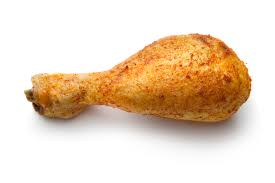

Imparando ad usare quarto
Prova header 1
Immagine metodo 1
In Figure 1 c’è il logo dell’associazione dei polli e anche dell’associazione italiana arbitri
Code
knitr::include_graphics("images/aia.png")Immagine metodo 2

In Figure 2 c’è una immagine del pollo
Come inserire una tabella
In Table 1 si vede una bellissima tabella
Code
kableExtra::kable(mtcars[1:6, ])Table 1: Una tabella di esempio
| mpg | cyl | disp | hp | drat | wt | qsec | vs | am | gear | carb | |
|---|---|---|---|---|---|---|---|---|---|---|---|
| Mazda RX4 | 21.0 | 6 | 160 | 110 | 3.90 | 2.620 | 16.46 | 0 | 1 | 4 | 4 |
| Mazda RX4 Wag | 21.0 | 6 | 160 | 110 | 3.90 | 2.875 | 17.02 | 0 | 1 | 4 | 4 |
| Datsun 710 | 22.8 | 4 | 108 | 93 | 3.85 | 2.320 | 18.61 | 1 | 1 | 4 | 1 |
| Hornet 4 Drive | 21.4 | 6 | 258 | 110 | 3.08 | 3.215 | 19.44 | 1 | 0 | 3 | 1 |
| Hornet Sportabout | 18.7 | 8 | 360 | 175 | 3.15 | 3.440 | 17.02 | 0 | 0 | 3 | 2 |
| Valiant | 18.1 | 6 | 225 | 105 | 2.76 | 3.460 | 20.22 | 1 | 0 | 3 | 1 |
Come mettere colonne
Testo nella prima colonna
Testo nella seconda colonna
Testo nella terza colonna
Come mettere le griglie
Prima colonna
Seconda colonna
Terza colonna
Come mettere i tabset
Lungo testo dell’introduzione
Primo tabset con una tabella contenente il dataset
Terzo tabset con il grafico dei dati
In Figure 3 c’è una immagine del pollo
Code
knitr::include_graphics("images/pollo.jpeg")